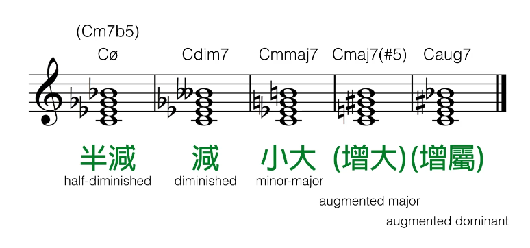
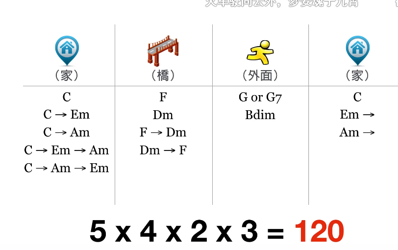

主要来源：好和弦NiceChord/Vivi官大为
现代和弦符号
- 和弦
- 和弦 chord 三个音以上的三度堆叠组合
- 三和弦 triad 三个音的和弦
- 七和弦 seventh chord 三度三度堆到第七个音的和弦
- 九和弦 九和弦 十一和弦 十三和弦同理
- 和弦家族
- 大 major 大调音阶的1357
- 小 minor 降37
- 属 dominant 降7
- 升到九以上：直接加大调音
字母标
- 基础：
- 变化：
- add 增加音
- sus 不要三度音 换成四或二度(默认四)
- omit 不要x度音
- () 其他什么都可以写
- 转位
- 不是用原本的根音当最低音
- C/E 读作 C on E
- 如果 on 本身不在和弦的音 直接在下方加
- 其他家族

和弦的主调关系
和弦的进行路径

终止式
七种调式
- 我的霹雳猫阿洛
- ### Ionian
- ### Dorian
- ### Aeolian
- ### Phrygian
- 西班牙感觉，西域风。尤其是围绕小二度弹。更常用的是还原三度音的Phrygian dominant, 更有西班牙感觉（西班牙的弗朗尼格
- 降2367 特色小二度
- ### Lydian
- 英雄 宇宙浩瀚感/ 围绕升四音（#4+5）制造滑稽感
- 升4
- 辛普森一家
- ### Mixolydian
- ### Locrian